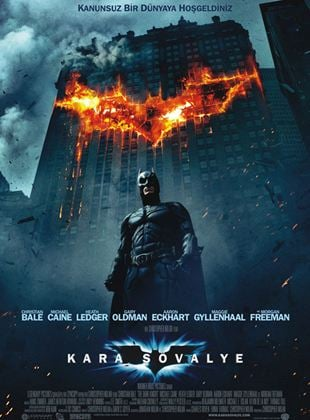

1. Esaretin Bedeli

Esaretin Bedeli, Andy ve Red isimli iki mahkumun parmaklıklar ardında kurdukları dünyanın hikayesini anlatıyor. Andy Dufresne, genç ve başarılı bir bankerdir. Karısını ve karısının sevgilisini öldürmek suçundan yargılanır ve ömür boyu hapis cezası alır. Shawsank Hapishanesi'nde dayak, işkence, tecavüz, her türlü durum yaşanmaktadır fakat Andy gene de hayata bağlı ve iyimserdir. Bu tutumu etrafındakileri de etkiler. Andy umutlu bakış açısıyla çevresindeki tüm mahkumları, parmaklıklar arkasında bile özgür bir yaşam olabileceğine inandırır. Andy'nin bu çabalarına ortak olacak bir arkadaşı da olacaktır: Red.Bir Stephen King uyarlaması olan filmde Morgan Freeman ve Tim Robbins başrolde. Film, 1995'te, aralarında en iyi film adaylığı da olmak üzere tam 7 dalda Oscar'a aday gösterildi.
Fragmanı İzlemek İçin
2.The Godfather

Baba, 40’lar ve 50’lerin Amerika’sında, bir İtalyan mafya ailesinin destansı öyküsünü konu alıyor. Don Corleone’nin kızı Connie’nin düğününde, ailenin en küçük oğlu ve bir savaş gazisi olan Michael babasıyla barışır. Bir suikast girişimi, Don’u artık işleri yönetemeyecek duruma düşürünce, ailenin başına Michael ve ağabeyi Sonny geçer. Danışmanları Tom Hagen’in de yardımlarıyla diğer ailelere savaş açan Corleone ailesi, eski moda yöntemleri de değiştirmeye başlar.
Mario Puzo’nun çok satan kitabından Puzo ve yönetmen Francis Ford Coppola tarafından sinemaya uyarlanan film o yıl En İyi Film, En İyi Erkek Oyuncu ve En İyi Uyarlama Senaryo dallarında Oscar kazanmıştır. Yapılan araştırmalar sonucu Türkiye'de en fazla izlenen ve satılan film olma özelliği de taşır.
Fragmanı İzlemek İçin
3. Batman:The Dark Knight
Kara Şövalye, halk için büyük bir tehdit oluşturan Joker’in ortaya çıkması ile kaosa dönen Gotham Sokakları’nın yeniden kurtarıcılığını üstlenen Batman’in hikayesini konu ediyor. Suç işleyenlerden arındırılan bir yer, bir zaman sonra yeniden tehdit altında kalabilir ve işte o zaman yeniden kolları sıvayacak olanların mücadelesi de daha keskin olarak hayata geçecektir. Batman, Teğmen Gordon ve Savcı Harvey Dent bir araya gelerek Gotham Sokakları’nda bu işi kotarmış olsalar da ansızın ortaya çıkan Joker, işleri fena halde bozar. Onun dehası ile baş etmek kolay olmayacaktır. Gotham eski karmaşa dolu günlerin eşiğindedir. Batman yeniden kurtarıcılığa soyunurken kendi varlığının bulduğu anlamı da sorgulamaya başlar. O aslında suçluların sayısını azaltıyor mudur yoksa çoğaltıyor mudur bunu gerçekten anlamak isteyecektir.
Fragmanı İzlemek İçin